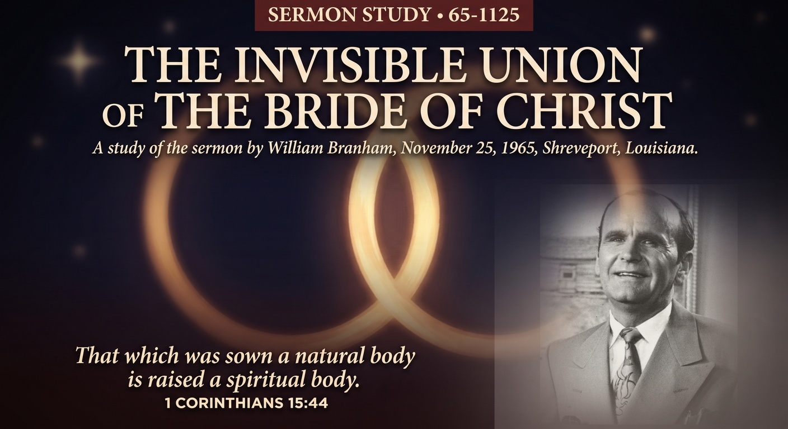

William Branham · November 25, 1965 · Life Tabernacle, Shreveport, Louisiana
♫ Listen to or read the full sermon at Voice Of God Recordings →

This message opens in grief. Before Brother Branham ever reaches his text, he prays for a church family that had just lost a husband and father, thanking God for a man he calls a great servant and asking mercy for the widow left behind. It's a small, human moment, and reading it now, knowing what was coming for Brother Branham himself less than a month later, it's hard not to hear it differently than the congregation in Shreveport did that Thanksgiving night. He wasn't just comforting them. He was, without knowing the date, describing what was about to be asked of his own household too.
The center of this message is a single, sharp distinction: there is a difference between being a church member and being the Bride. Brother Branham points to Cain as the first church member the Bible records, a man who brought an offering, who worshipped, who did religious things, and who still wasn't right with God because his worship didn't line up with what God had actually said. Being a member of a congregation was never the qualification. Being joined to Christ the Word is.
The title isn't describing something still to come. Brother Branham is emphatic that this union, the Bride being joined to the Word, is not a future event scheduled for some later date. It's happening in that room, that night, and in every heart anywhere lining up with the Word in real time. He describes believers as having already been separated from an old union by spiritual death and remarried into a new one, still carrying the same life, the same Spirit, that was present in the beginning, now finding its way into a people prepared to receive it. It is, in his own words that night, taking place right now.
This isn't a soft message. Brother Branham spends real time confronting the world's pull on the church, the pressure to look acceptable to neighbors and denominations rather than to the Word itself, asking bluntly whether a person is married to the church or married to Christ. It's an uncomfortable question on purpose. A true union costs something. It asks for a life lined up with the Word even when that costs standing with the crowd around you.
Knowing this sermon sits among the last handful Brother Branham ever preached changes how a reader sits with it. Whether he knew, in that moment, how close the end truly was is not something any of us can say with certainty, but the message he leaves is, in hindsight, exactly the one his whole ministry had been building toward: not information about the Bride, but an actual invitation into the union itself, offered while there was still time to receive it.
Source: The Invisible Union Of The Bride Of Christ, preached November 25, 1965. Text © Voice Of God Recordings. This study reflects my own understanding of the message as a believer, not a verbatim reproduction of the sermon.
← Back to Sermon Studies